2016-06-29 22:27:38
豆瓣原页
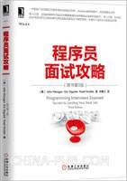
读过 程序员面试攻略(原书第3版) ★★★★★
可以，这很干货！尤其是后面简历的一些指导，面试的一些tips，我觉得每次面试前都最好看一看~
2016-06-29 20:30:17
豆瓣原页
： 《斯诺登 Snowden (2016)》预告片
太帅了太帅了！！！我要看我要看！！！
2016-06-28 16:15:27
豆瓣原页
看过 可塑性记忆 / プラスティック･メモリーズ ★★★★☆
这动画分数曲线：5、4、3、……、3、5，取个均值4吧。第一集很是有趣，主体也很明确放在了人类的情感上面，然后水了很多集，然后回到主题，除了最后一集，后面几集略显仓促，最后一集节奏相当好！～愿你有一天能和重要之人重逢～（话说人造人和人造人，这个梗太有才了！！！）
2016-06-15 13:00:38
豆瓣原页
读过 解忧杂货店 ★★★★☆
这部作品还是有点推理的感觉，根据来信做出推理，看到来信我也会想解决办法，也有的困恼会产生共鸣。然而还是有些超现实了 _(:3」∠)_ （话说用手机读小说真心坚持不下来，这本书大概读了一年）
2016-06-14 21:55:06
豆瓣原页
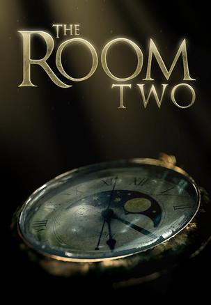
玩过 迷室2 The Room Two ★★★★☆
这一部玩的好累啊 QAQ 还是第一部比较方便，这一部切来切去简直了，感觉差不多，但是就是好麻烦了，第一部不用看提示，这一部离不开提示
2016-06-14 17:15:44
豆瓣原页
看过 惊天魔盗团 / Now You See Me ★★★★★
2分钟的成功！
2016-06-12 23:14:38
豆瓣原页
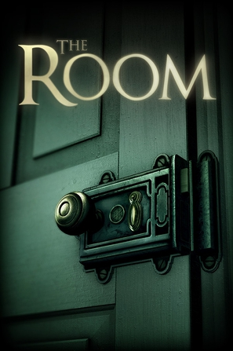
玩过 迷室 The Room ★★★★★
Heidi学姐推荐的，真是一款棒棒的游戏。实体店的密室逃脱经常觉得跟不上设计者的脑回路，不过这个有限的空间内真是爽翻啊！！！
2016-06-08 15:52:50
豆瓣原页
看过 魔兽 / Warcraft ★★★★☆
回请下咯，场面做的5别别棒，兽人PVP那两段真是特别棒，特效也不错，最后STAFF列表也都是特效；吴彦祖不是靠脸吃饭的 哈哈哈哈哈；
2016-06-07 21:40:12
豆瓣原页
看过 愤怒的小鸟 / The Angry Birds Movie ★★★★☆
剧情一般般，但是小鸟太萌了！！！！最后那几十只大眼睛，简直萌翻！！！！
2016-06-04 01:07:32
豆瓣原页
看过 X战警：天启 / X-Men: Apocalypse ★★★★☆
闯哥请客，不错不错，颇有《妇联3》的感觉，呼入一夜BOSS来，凭空多出来了个GOD，狼叔戏份有点少啊，明年2月见╮(￣▽￣)╭这一会历史故事（？逆转未来的未来故事？），一会未来故事，心好累 _(:3」∠)_
2016-06-01 17:01:12
豆瓣原页
说
我的天哪！！！！！！瞧我发现了什么！！！！！！小学时候1块钱一本小漫画，总共有一百多册的口袋书，真是回忆啊[憨笑] 分享三重野瞳的单曲《ひとつのハートで》https://douc.cc/0AbVXs
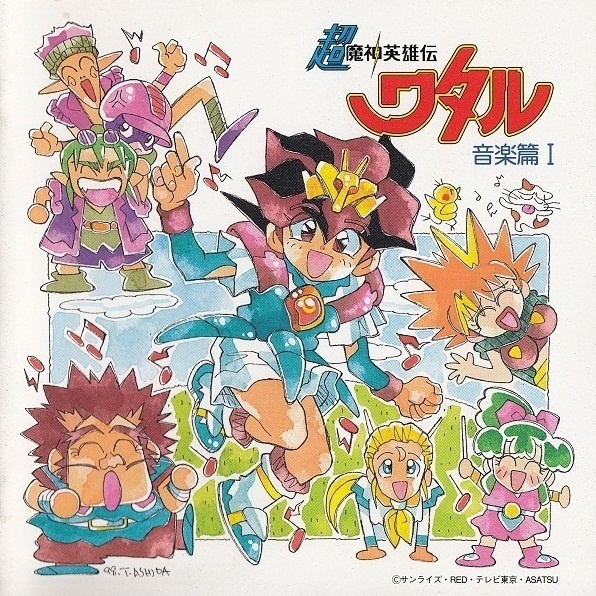
2016-05-30 16:30:28
豆瓣原页
读过 程序员健康指南 ★★★★☆
多了解了解医学，多了解了解本书所述的经验，那都是极好的～受益匪浅～
2016-05-27 11:11:35
豆瓣原页
看过 伦敦陷落 / London Has Fallen ★★★★☆
真刺激，看得爽！
2016-05-22 00:48:06
豆瓣原页
看过 北京遇上西雅图之不二情书 ★★★★☆
主线比较散，看着看着甚至觉得跑题了？不过老夫妻那个确实很抓人，中间几次含泪都是老夫老妻的，尤其是教堂的那一段。不知道我会不会有“去家千里兮，生无所归而死无以为坟”的一天，感觉还是蛮沉重的 _(:3」∠)_ 虽然结局是可遇不可求的浪漫～
2016-05-11 11:57:07
豆瓣原页
看过 霸王别姬 ★★★★★
做事儿只能自个儿成全自个儿……霸王别姬：英雄末路的悲壮情景……惋惜:-<
2016-05-10 15:42:11
豆瓣原页
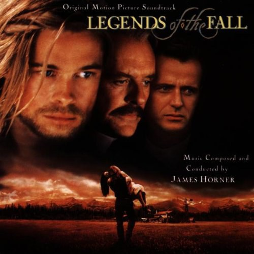
听过 Legends of the Fall ★★★★★
The Ludlows 可以听一辈子
2016-05-10 11:13:17
豆瓣原页
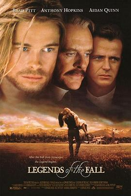
看过 燃情岁月 / Legends of the Fall ★★★★☆
前面16:00 Susan弹钢琴那一段虽然是引出下文的，但是隐约感觉到故事的悲壮。配乐已经听了一年多了，才来看的电影。不给五星的原因，是中间那一段没看明白，为什么要离家出走？还有就是有些因为文化差异导致的不能理解，但是大部分处理的都很不错，音乐一响潸然泪下~
2016-04-29 20:47:47
豆瓣原页
说
有种好听叫情怀~ 分享吴欣睿的单曲《三个人的时光》https://douc.cc/1oxjbO
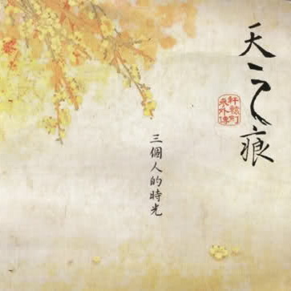
2016-04-23 20:16:13
豆瓣原页
看过 超感猎杀 第一季 / Sense8 Season 1 ★★★★☆
感谢阿大学姐推荐～这片子让我彻底接受了homosexual毫无不适感→_→很多情节够热血、够感人！那么最后一集为啥注射了镇定剂醒过来之后就没事了呢？还有，明明是sense8+啊，那么多人都能同感
2016-04-16 13:17:41
豆瓣原页
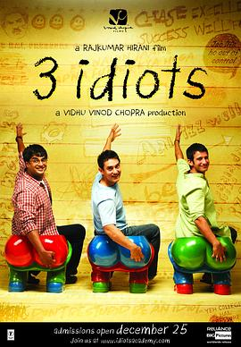
看过 三傻大闹宝莱坞 / 3 Idiots ★★★★★
All is well! 真是励志啊！
2016-04-15 22:23:44
豆瓣原页
想看 超感猎杀 第一季 / Sense8 Season 1
感谢阿大学姐推荐>3<
2016-04-13 17:15:39
豆瓣原页
喜欢日记 慢碳水化合物饮食 （the Slow-Carb Diet)
2016-04-13 11:32:14
豆瓣原页
看过 陪安东尼度过漫长岁月 ★★★★★
说的是澳洲留学生的故事，推荐者要是能从这点出发推荐就更好了，很开心没有因一时赌气错过这部电影～电影文艺范儿很浓，感觉很轻松，前半部分开心、后半部分心碎，篇末“却不知道和谁分享这份喜悦”也是多次感同身受吧，现在有父母呢，并不孤独。祝大家都能实现自己的梦想、做自己感兴趣的事…
2016-04-06 22:58:07
豆瓣原页
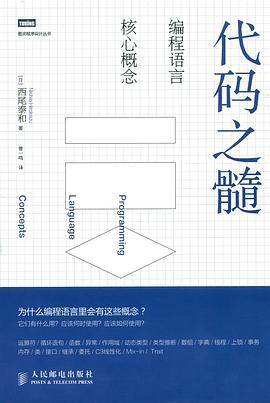
读过 代码之髓 ★★★★☆
对于各种程序设计语言的特性进行了较为精炼的描述，对于语言的特性、各种语言的设计都进行了大致的介绍，确实很能开阔视野~另一方面，有些理解确实加深了，比如委托的概念，之前在C#中学习感觉实在有些朦胧，本书用Java演示了一下，就清晰多了~
2016-03-30 14:54:47
豆瓣原页
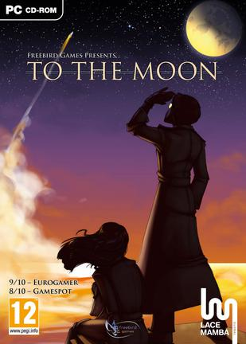
玩过 去月球 To the Moon ★★★★☆
伴随轻盈乐声的故事美就美在，有缘人终会相聚。从事实中忘记约定仍然能结为伴侣开始，到抹去女主在男主脑内的记忆然后在工作时相聚并且一起作为宇航员飞向月球。男主的记忆从残缺不齐改到堪称完美~无不令人动容~
值得一提的是，制作商说购买游戏音乐集的一半费用将捐给自闭症…
2016-03-28 16:55:11
豆瓣原页
看过 少女们向荒野进发 OVA / 少女たちは荒野を目指す OVA ★★★★★
若要前往荒野，补充营养是必不可少的，吃饭去喽~（汉化组已经先睹为快~）
2016-03-27 23:11:21
豆瓣原页
看过 从前有座灵剑山 / 霊剣山 星屑たちの宴 ★★★★☆
哎，又是烂尾……还不如不看最后一集，画面崩、剧情节奏把握的不好，而且全篇动画太无厘头了！但是4星国漫鼓励~
2016-03-27 23:01:03
豆瓣原页
看过 少女们向荒野进发 / 少女たちは荒野を目指す ★★★★★
这个世界是无垠的荒野吧，仅凭兴趣是无法生存的，只有燃烧着野心的人，才能在这残酷的荒野中向梦想发起挑战！
2016-03-25 20:52:39
豆瓣原页
看过 疯狂动物城 / Zootopia ★★★★★
好看^ω^
2016-03-15 00:08:03
豆瓣原页
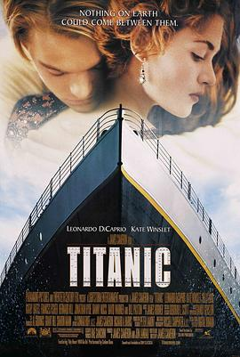
看过 泰坦尼克号 / Titanic ★★★★★
瞻仰已久，不愧神作，3小时意犹未尽。The Heart of Ocean的处理真心好，结局也是回味无穷~感人的不只是爱情，而是更大的爱：兄弟之爱、母子之爱、事业之爱（4个音乐家）、男女之爱~
2016-03-01 23:50:51
豆瓣原页
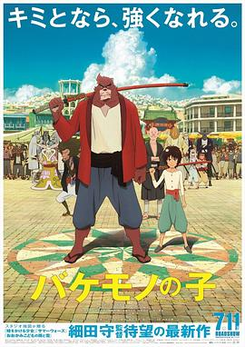
看过 怪物之子 / バケモノの子 ★★★★★
学霸男女养成记！！！我喜欢！！！另外男主的成长也是很有代入感，泪目，尤其是后面熊徹躺在病床上时，第三人称说九太这孩子成长的时候，泪目；然后后就是1:46:12熊徹转世为剑，也是泪目，代入感！！！非常有代入感的电影看着就是泪目啊，学霸心理刻画的也特别好，完结撒花之前男女主…